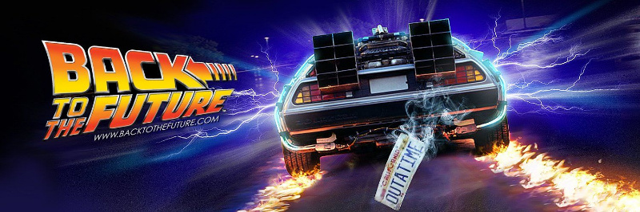

Viatgers del temps amb 'Back to the future'


🤔💭Recordeu la vostra primera classe de Tecnologia a 1r d’ESO?
És possible que una gran majoria de vosaltres no, però jo sí que la recordo, i molt bé. A la pregunta: Què és la tecnologia i des de quan existeix?, gairebé tota la classe vau respondre: el mòbil, l’ordinador i altres dispositius electrònics on és imprescindible l'ús d'electricitat (aquest curs n'aprofundirem més sobre això...). També pensaveu que la tecnologia existia només des de feia relativament pocs anys, coincidint amb aquestes invencions.
Ben aviat, però, vau comprendre que el concepte de tecnologia és molt més ampli: qualsevol producte, procés o sistema creat per les persones per satisfer necessitats, resoldre problemes o millorar la qualitat de vida. També pot incloure elements relacionats amb l’oci i l’entreteniment.
A través d’una pluja d’idees, vam veure que la tecnologia no només abasta els dispositius electrònics, sinó també objectes quotidians com les cadires i les taules de l’aula, les ulleres, les gomes elàstiques per recollir els cabells o els jocs, les pilotes, etc.
...vam conèixer qui va ser l'actriu de Hollywood i inventora Hedy Lamarr, coprecursora del Wifi, GPS i Blutooth a partir de la seva vida de pel·lícula; vam investigar i treballar el correu electrònic amb la nostra signatura personalitzada, organitzar carpetes al Drive; així com també les eines del taller; l'ús de material de dibuix tècnic (joc d'escaires, compàs, paral·leles i perpendiculars), les capes de la terra, els materials; les 4R (reduïr, reutilitzar, reusar i reciclar), vam representar la prehistòria en maquetes amb algunes eines i materials reciclats, vam aprendre sobre l'Hort: els aliments de temporada, netejar, preparar i cultivar plantes amb fruits i aromàtiques i cuidar-les fins a obtenir fruits, vam coneixer una mica d'urbanisme de la nostre ciutat i, finalment, vam ser reporters i reporteres realitzant fotodenúncies amb l'objectiu de millorar la nostra ciutat, Montcada, a través d'una instància conjunta per enviar-la a ll'Ajuntament.
A través de la pel·lícula Back to the future (1985) viatjarem en el temps i en endinsarem en diveres missions on podrem descobrir i ampliar nous coneixements i horitzons. Espero que continuem gaudint i aprenent plegants en aquest 2n curs!
Alguns de vosaltres us preguntareu... però, per què la Lidia ha escollit aquesta pel·lícula del 1985, del segle passat -s.XX-, per treballar a classe???
Tot i que la ciència ficció no és el meu gènere preferit, aquest film és molt interessant. No només perquè va ser una icona en aquella època -anys 80- sino que va aconseguir barrejar ciència-ficció, humor, aventures i emoció d’una manera inèdita fins aleshores, amb una mirada optimista sobre el futur i la tecnologia, just quan la societat encara no estava envoltada dels dispositius electrònics que avui ens semblen indispensables i que, fins i tot, anava més enllà del que hi havia.
A més, també convida a reflexionar sobre altres qüestions que l'envolten: el passat i el futur, l'evolució històrica i el progrés de les societats i dels objectes, l'impacte cultural i musical, la inclusió, l'assetjament (bullying), els rols de gènere de diferents èpoques i dels personatges i l'aprenentatge mutu i intergeneracional -entre d'altres moltes coses-, mantenint l'essència i dinamisme a través de la mirada adolescent i de la frescor que la caracteritza.
Llicenciat sota la Llicència Creative Commons Reconeixement CompartirIgual 4.0